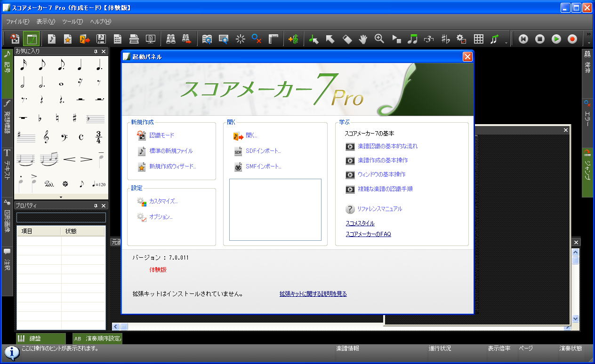

| TOP | weblog | TIPS | Works | リンク |
| 2012-11-03 pdｆの楽譜からSMFを生成する河合楽器の「スコアメーカー７」 PDFやBMPからSMFを生成する普通に考えるとかなりの技術を要するソフトウェア、河合楽器の「スコアメーカー７」です。 結構昔からあるソフトですが、このたび最新バージョンの体験版で課題曲の 「おもちゃの兵隊行進曲」（リンクは藤田先生の音楽研究室です） をPDFからSMFを生成してみました。 楽譜が一切読めない、というか、読もうとする気が全く起きない私にとってSMFのピアノロールはピアノ曲を練習するのには、あるととても効率が良いのです。 ギター、ベース時代は楽譜なんて存在しない曲のカバーばっかりでしたから耳コピーです、ベースはまあ、そんなに難しくないけどギターの速弾きやちょいと癖のあるコードなんかはコピーが難しい、または、コピー不可も結構ありました。 ３年くらい前に一度、このソフトにお世話になっておりますが認識性能や操作性は相当向上しています。 でも買わないけどね、体験版を使い続けます。 １５日間限定ですが、とある方法を使えば繰り返し使えます。 楽譜（PDF)からSMFを作ってみました。 「おもちゃの兵隊行進曲」 楽譜 (PDF) 「おもちゃの兵隊行進曲」SMF 自動生成されたSMFをSoundFontで鳴らしてみた １．準備 当然、ターゲットのpdfが必要です、ノイズは多少はOKでしょうけどあまり多いと認識できません。 また、斜めにスキャンされたようなpdfもダメでしょう。 ２．オープニング・ダイアログ 「スコアメーカー」てな名前なので「楽譜作成」がメインの機能でしょうけど、そんな昨日は全く必要としないので「認識モード」をクリックします。  ３．PDFのフォルダを指定して変換したいPDFを選択します。 出来ればA3に拡大しておいたほうが誤認識率が下がるみたい。  ４．PDFファイルを選択すると表示されるダイアログ。 ５．認識実行 ６．認識が完了したら以下の画面になるので、あとはFormat1でSMFにエクスポートすればよし。 問題点 ショパンのエチュード、他とえば１０−２などは音符が欠落します、ＰＤＦを拡大すると拾ってくれるかも？ 最後の音符が楽譜通りのデュレーションにならない。 ベロシティが途中から小さくなる。楽譜の記号のせいかもしれない。 |